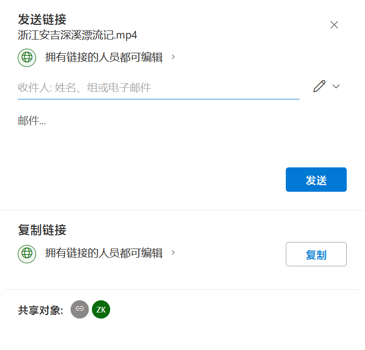

之前发过一篇在 Hexo 中分享 Bilibili 视频，到今天为止，更新页已经有两篇文章显示视频封面了。但时间一久，这个破B站的视频却是叫人越看越不爽：360p 画质太差，还容易触发跳转。基本上除了拉进度条，所有的交互都会触发跳转，甚至在正常跳转以外，还会另外弹出一个 EDGE 窗口——不用说，就是强迫你用客户端，如果装了客户端就直接弹出客户端，像我这样没装客户端的 Firefox 用户，可不就只能跳 EDGE 了。资本家的吃相真是难看。
如果是墙外倒好了，Youtube 好歹给了 720p，能看，也不会遍地是雷点一下就窗口乱飞，更别说 Vimeo 这样的外链专用平台了。当时就起心动念，想找一个 Vimeo 的墙内平替，可惜并没有。
但曲线救国的方式仍然存在，这里介绍两种：
快手
参考龙鲲发布的免费托管视频获取直链的方法，略述其步骤如下：
- 打开快手创作者服务平台，上传所需的视频；
- 复制视频链接，得到的链接格式为
https://v2.kwaicdn.com/upic/2023/09/07/18/BMjAyMzA5MDcxODU0MDlfMzExODg5MDkwOF8xMTIyOTIxMzgyOTFfMF8z_b_Bb4881028badb00a5a02f6aab23939eed.mp4?pkey=AAV6BvGtU4_1Pav9LcJNeFAZYvk0LVAA61By9ZYI9yHYkTuv5w2-byYBXmpP0dIKQ-KcnzjfBwc5rZQuvj-vzrYoqL2tPzwRorzbXtB6gmyozUh7GhjcImS1XvoYN7Tsj-E&tag=1-1694085144-unknown-0-xitrc9occw-b3795c0f30082acd&clientCacheKey=3xeperxpwzzg4g6_b.mp4&di=2a310187&bp=14734&tt=b&ss=vp，我们去除「？」后面的附加参数，得到https://v2.kwaicdn.com/upic/2023/09/07/18/BMjAyMzA5MDcxODU0MDlfMzExODg5MDkwOF8xMTIyOTIxMzgyOTFfMF8z_b_Bb4881028badb00a5a02f6aab23939eed.mp4； - 此时的链接是限制访问的，但只要将链接里的域名
v2.kwaicdn.com替换成txmov2.a.kwimgs.com，就可以直接访问了。
还有一点要注意的是，快手提供了若干种不同的视频格式，而我们只想要 mp4 格式，如果步骤 2 中，去掉参数之后的后缀名不是 .mp4，那我们就要用浏览器的视频嗅探插件获取正确的格式（不同格式的视频生成的链接不一样，不能简单替换文件后缀名）。
操作不难，实测可用，快手的服务器速度也快，是非常好的免费视频图床。只不过仍有顾虑，大公司的羊毛免费薅着，说不准哪天就给你掐了。
OneDrive
因为我已经买了 Microsoft 365 套餐，OneDrive 有 1T 的容量，所以天然就倾向这个方案。四个人拼车的话，一年也就几十块钱，算得上是便宜大碗。
这里有两种途径，分别是：
说明都很详细，按着步骤来就可以搞定了，个人更偏好第二种。注意复制链接的时候修改共享权限：
默认权限是「拥有链接的人员都可编辑」，这可万万使不得。
{kind=link}
点击进入权限编辑，将「可编辑」改为「可查看」，点击确定，即可得到安全的链接：
{kind=link}
最后复制到 OneDrive直链获取工具 v2.0，注意选择对应的格式，就能得到可以外部访问的链接了。
插入 Markdown 文件
Hexo 用户想必了解过 hexo-tag-dplayer 之类的视频插件，但考虑到 HTML5 对 <video> 标签的支持已经很完善，秉承着「如非必要勿增实体」的原则，不如选择手动插入。
按照获取的外链地址，在 Markdown 文件中插入以下代码：
1 | <video autoplay muted loop class="video" poster="/bass-play-of-jingxi/image-20240818105959267.png"> |
使用快手方案的朋友替换链接即可，效果如下：
并且可以在 Obsidian 这样的 Markdown 编辑器中预览！
几个值得注意的重要参数，可以自行选择加还是不加：
controls显示播放器控件。如果是作为封面用，最好是不要啦，影像美观；autoplay自动播放。需要注意的是，如果不搭配muted静音属性的话，Chrome 浏览器会禁用自动播放；muted静音；loop循环播放；poster封面图片。在视频未加载完成时显示，视频动辄几百兆，还是有必要预留补位的图片。
CSS 里面再设置一下 .video 的属性：
1 | .video { width: 100%; aspect-ratio: 16 / 9; } |
更新完毕，神清气爽！
PS：上传 OneDrive 或者快手之前记得压缩一下视频，毕竟这种外链没有根据带宽选择视频精度的功能。